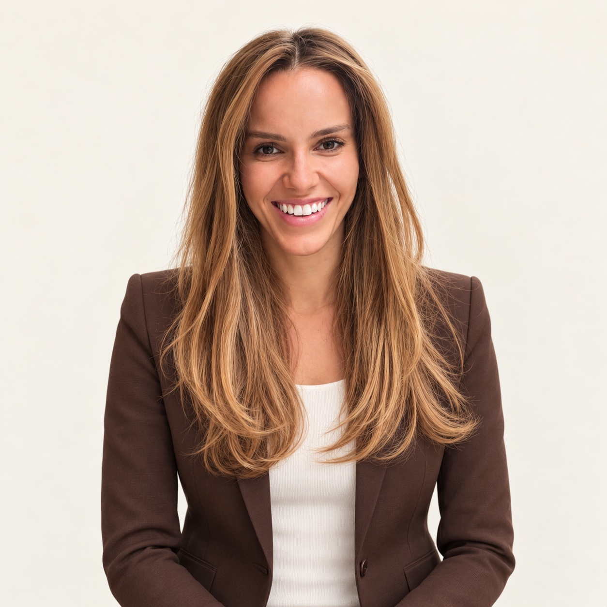

About Concentric
Built around a simple question about professional support.
Can someone be professionally well-connected and still lack the right people for the conversations that matter?

Founder
Mila Milićević
Founder, Concentric
Concentric was founded by Mila following original research into what professionally established women felt was missing at significant points in their careers.
Mila is the founder of NexaStrategic and works as a Fractional COO and Operating Partner with founder-led businesses. She created Concentric to test whether deliberately composed peer groups can create a better environment for professional decisions that are still in play.
Council Facilitator
Dr. Melonie Boone
Melonie facilitates Concentric’s founding Councils. Her role is to provide structure and timekeeping so the conversation can stay focused and useful. She is not there to coach the group or direct members toward an answer.
The company
Independent by design.
Concentric is an independent initiative created and operated by NexaStrategic LTD.
Edition One is the founding US pilot: three Councils of six women, meeting online for 90 minutes each month.